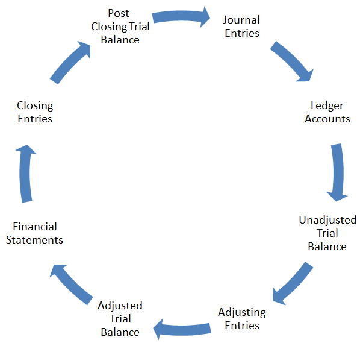

Accounting Cycle
Accounting cycle is a step-by-step process of recording, classification and summarization of economic transactions of a business. It generates useful financial information in the form of financial statements including income statement, balance sheet, cash flow statement and statement of changes in equity.
The time period principle requires that a business should prepare its financial statements on periodic basis. Therefore accounting cycle is followed once during each accounting period. Accounting Cycle starts from the recording of individual transactions and ends on the preparation of financial statements and closing entries.
Major Steps in Accounting Cycle
Following are the major steps involved in the accounting cycle. We will use a simple example problem to explain each step.
- Analyzing and recording transactions via journal entries
- Posting journal entries to ledger accounts
- Preparing unadjusted trial balance
- Preparing adjusting entries at the end of the period
- Preparing adjusted trial balance
- Preparing financial statements
- Closing temporary accounts via closing entries
- Preparing post-closing trial balance
Flow Chart
Written by Irfanullah Jan